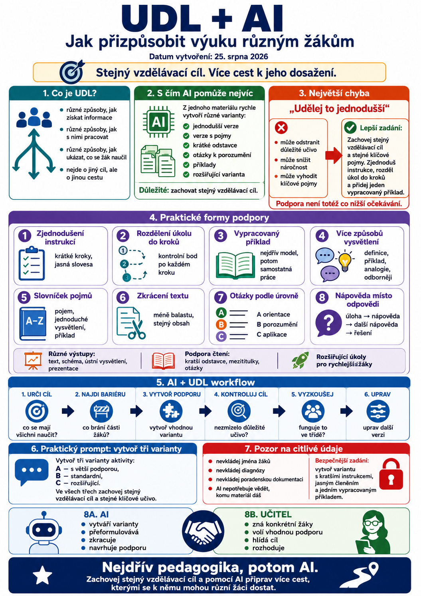

Jedna třída nikdy není skutečně „jedna skupina“.
Máme v ní žáky, kteří:
- pracují rychle,
- potřebují více času,
- lépe rozumějí obrázku než dlouhému textu,
- potřebují jednodušší instrukce,
- zvládnou složitější úkol bez podpory,
- mají problém se čtením,
- lépe se učí prakticky,
- potřebují konkrétní příklad,
- nebo se v dlouhém zadání prostě ztratí.
Právě tady může být umělá inteligence učiteli velmi užitečná.
Ne proto, že „vyřeší individualizaci“.
Ale proto, že dokáže rychle vytvořit více variant stejného materiálu, aniž bychom museli každou verzi začínat od nuly.

Co je UDL?
UDL znamená Universal Design for Learning, tedy univerzální design pro učení.
Jeho základní myšlenka je jednoduchá:
Nevytvářejme nejprve jednu jedinou cestu k učivu a potom dodatečně neopravujme problémy jednotlivých žáků.
Místo toho už při přípravě výuky počítejme s tím, že žáci budou potřebovat různé způsoby:
- jak získat informace,
- jak s nimi pracovat,
- jak ukázat, co se naučili,
- jak se do učení zapojit.
Nejde tedy o to připravit třicet různých hodin pro třicet žáků.
Jde spíš o to nabídnout více cest ke stejnému cíli.
AI může pomoci hlavně s variantami
Představme si, že máme jeden výkladový text.
Bez AI bychom možná vytvořili:
- jednu verzi pro celou třídu,
- případně jednu jednodušší variantu.
S AI můžeme rychle připravit například:
- původní text,
- jednodušší verzi,
- verzi s vysvětlením pojmů,
- verzi s krátkými odstavci,
- verzi s otázkami k porozumění,
- verzi s příklady,
- verzi pro rychlejší žáky.
Důležité je ale zachovat stejný vzdělávací cíl.
Největší chyba: „udělej to jednodušší“
Když AI řekneme pouze:
Udělej tento pracovní list jednodušší.
může udělat něco, co nechceme:
- odstranit důležité učivo,
- zjednodušit odborné pojmy až příliš,
- snížit náročnost úkolu,
- vyhodit to, co se měl žák skutečně naučit.
Lepší zadání zní:
To je zásadní rozdíl.
Podpora není totéž co nižší očekávání.
1. Zjednodušení instrukcí
Jedna z nejrychlejších věcí, kterou může AI udělat.
Původní zadání může znít:
Na základě uvedeného textu analyzujte jednotlivé argumenty autora, porovnejte jejich význam a následně formulujte vlastní stanovisko podložené dvěma konkrétními příklady.
AI můžeme říct:
Výsledek může být:
- Přečti text.
- Najdi hlavní argumenty.
- Porovnej dva z nich.
- Napiš svůj názor a přidej dva příklady.
Obsah zůstává.
Jen se lépe orientujeme v tom, co máme dělat.
2. Rozdělení složitého úkolu do kroků
Někteří žáci zvládnou dlouhé zadání bez problémů.
Jiní se ztratí už v první větě.
AI můžeme požádat:
Například:
Krok 1
Najdi v textu tři hlavní pojmy.
Krok 2
Každý pojem vysvětli jednou větou.
Krok 3
Najdi mezi nimi souvislost.
Krok 4
Použij jeden pojem v konkrétním příkladu.
Taková struktura může velmi pomoci žákům, kteří potřebují jasnější vedení.
3. Vypracovaný příklad
Jedna z nejúčinnějších forem podpory je někdy úplně obyčejný příklad.
Místo dlouhého vysvětlování můžeme AI zadat:
To funguje například u:
- gramatiky,
- matematiky,
- odborných výpočtů,
- práce s textem,
- argumentace,
- tvorby vět.
Žák nejprve vidí:
jak úkol vypadá, když je hotový.
A potom pracuje samostatně.
4. Více způsobů vysvětlení
Některý žák pochopí definici.
Jinému pomůže příklad.
Dalšímu analogie.
AI může rychle vytvořit několik způsobů stejného vysvětlení.
Například:
1. jednou větou,
2. pomocí běžného příkladu,
3. pomocí přirovnání,
4. odbornějším vysvětlením.
Pak můžeme vybrat způsob, který se pro danou skupinu hodí.
5. Slovníček pojmů
U odborných textů může být problémem nejen obsah, ale slovní zásoba.
AI může vytvořit:
- seznam klíčových slov,
- jednoduché definice,
- příklad použití,
- překlad,
- krátkou větu.
Například:
napětí · rozdíl elektrického potenciálu
proud · pohyb elektrického náboje
odpor · vlastnost, která omezuje průchod proudu
U jazykové výuky můžeme přidat i výslovnost nebo krátké modelové věty.
6. Zkrácení textu bez ztráty obsahu
U dlouhého textu může AI pomoci odstranit:
- zbytečné opakování,
- dlouhé věty,
- vedlejší informace,
- složité formulace.
Dobrý prompt může vypadat:
Tady je důležité určit, co se nesmí ztratit.
7. Otázky podle úrovně podpory
Stejné učivo nemusí znamenat stejné otázky.
Můžeme vytvořit například tři úrovně.
Úroveň A – orientace
- Co je…?
- Najdi…
- Vyber…
Úroveň B – porozumění
- Vysvětli…
- Porovnej…
- Uveď příklad…
Úroveň C – aplikace
- Použij…
- Navrhni…
- Zdůvodni…
AI může z jednoho zdrojového textu připravit všechny tři skupiny během chvíle.
8. Nápověda místo hotové odpovědi
Velmi užitečné je požádat AI, aby nepodávala řešení okamžitě.
Například:
Tím můžeme vytvořit systém podpory:
Žák může podporu použít pouze tehdy, když ji potřebuje.
9. Různé způsoby, jak žák ukáže, co umí
Ne každý výstup musí být dlouhý psaný text.
U stejného cíle můžeme nabídnout více forem.
Například:
Možnosti:
• krátké písemné vysvětlení
• schéma s popisky
• ústní vysvětlení
• krátká prezentace
• modelová situace
• jednoduchý postup krok za krokem
AI může pomoci navrhnout různé typy výstupu a zároveň zachovat stejné hodnoticí kritérium.
10. Výběr místo chaosu
UDL neznamená:
Každý si dělejte, co chcete.
Příliš mnoho možností může žáky naopak zahltit.
Lepší bývá nabídnout třeba dvě nebo tři jasné varianty.
Například:
A – napiš krátké vysvětlení,
B – vytvoř jednoduché schéma,
C – připrav tři příklady.
Všechny varianty ale ověřují stejný cíl.
11. Podpora čtení
AI může upravit text tak, aby se v něm žák lépe orientoval.
Například:
- kratší odstavce,
- mezititulky,
- zvýrazněná klíčová slova,
- stručné shrnutí,
- otázky po jednotlivých částech.
Dobré zadání:
12. Podpora jazykově slabších žáků
U cizího jazyka může AI vytvořit několik vrstev podpory.
Například u dialogu:
Varianta 1
celý modelový dialog
Varianta 2
dialog s vynechanými slovy
Varianta 3
pouze klíčové fráze
Varianta 4
samostatná konverzace bez podpory
Žáci tak mohou postupně přecházet od modelu k samostatné práci.
13. Obrácená diferenciace
Diferenciace není jen „udělej jednodušší verzi“.
Stejně důležité je připravit něco pro žáky, kteří jsou rychle hotoví.
AI může vytvořit:
- rozšiřující otázku,
- složitější případ,
- argumentační úkol,
- problém bez jednoznačného řešení,
- výzvu „najdi chybu“.
Například:
14. Nechej žáka rozhodnout, jakou podporu potřebuje
Zajímavé je nabídnout podporu postupně.
Potřebuji trochu pomoci
→ zobrazím klíčová slova
Potřebuji více pomoci
→ zobrazím první krok
Pořád nevím
→ zobrazím vypracovaný příklad
Žák si sám volí míru podpory.
To podporuje větší samostatnost než situace, kdy každý automaticky dostane nejjednodušší verzi.
15. AI jako osobní vysvětlovač
Žák může AI použít i přímo.
Dej mi jiný příklad.
Polož mi tři otázky a zjisti, zda tomu rozumím.
Nedávej mi hned odpověď, ale pomoz mi otázkami.
To může být užitečné, pokud má škola jasná pravidla používání AI a žáci vědí, jak výstupy kontrolovat.
UDL není „speciální verze pro slabší žáky“
Tohle je důležité.
UDL není založené na tom, že:
tady máme normální pracovní list a vedle něj jednodušší verzi pro „ty ostatní“.
Smyslem je připravit výuku tak, aby různí žáci měli přístup k témuž cíli různými cestami.
To je pedagogicky mnohem zdravější.
Co má zůstat stejné?
Při diferenciaci pomocí AI bych kontrolovala čtyři věci:
1. Vzdělávací cíl
Co se má žák naučit?
2. Klíčové pojmy
Co musí opravdu znát?
3. Úroveň očekávání
Neodstranila AI podstatnou část úkolu?
4. Způsob podpory
Co jsme změnili, aby se žák k cíli dostal?
Správná diferenciace často nemění cíl.
Mění cestu k němu.
Praktický prompt: vytvoř tři varianty
Z následující aktivity vytvoř tři varianty.
Varianta A – s větší podporou
• kratší instrukce,
• úkol rozdělený do kroků,
• jeden vypracovaný příklad,
• případně nabídka klíčových slov.
Varianta B – standardní
Zachovej přibližně původní náročnost.
Varianta C – rozšiřující
Přidej požadavek na vysvětlení, použití nebo argumentaci.
Ve všech třech variantách zachovej stejný vzdělávací cíl a stejné klíčové učivo.
Původní aktivita:
[vložit]
Praktický prompt: uprav instrukce
Zachovej přesně stejný úkol.
Použij:
• krátké věty,
• číslované kroky,
• jednoznačná slovesa,
• maximálně jednu instrukci v jednom kroku.
Nevysvětluj řešení.
Instrukce:
[vložit]
Praktický prompt: podpora bez snížení cíle
Nejprve napiš, jaký je jeho vzdělávací cíl.
Potom navrhni tři způsoby, jak žákovi poskytnout větší podporu, aniž by se změnil vzdělávací cíl nebo se odstranila podstatná část učiva.
Úkol:
[vložit]
Tento prompt je užitečný právě proto, že AI nejprve nutí rozpoznat, co vlastně nesmí při úpravě zmizet.
AI sama neví, co konkrétní žák potřebuje
Tady je důležitá hranice.
AI může vytvořit variantu:
s kratšími instrukcemi.
Ale nezná konkrétního žáka tak jako učitel.
Nevidí:
- jak pracuje ve třídě,
- co mu pomáhá,
- co ho naopak rozptyluje,
- co už umí,
- jak reagoval minulou hodinu.
Proto by AI neměla rozhodovat:
Tento konkrétní žák potřebuje přesně toto opatření.
Může pomáhat s tvorbou materiálu.
Pedagogické rozhodnutí zůstává na učiteli.
Pozor na citlivé údaje
Při diferenciaci je lákavé napsat AI:
Tady je zpráva z poradny konkrétního žáka. Vytvoř mu pracovní list.
To už může být problém.
Do běžných generativních AI služeb bychom neměli bez jasně stanovených podmínek vkládat:
- jména žáků,
- diagnózy,
- zdravotní informace,
- poradenskou dokumentaci,
- citlivé osobní údaje.
Bezpečnější zadání může být například:
AI nepotřebuje vědět, kterému konkrétnímu žákovi materiál dáme.
AI + UDL v jednom jednoduchém workflow
Můžeme použít tento postup:
1. URČI CÍL
Co se musí všichni naučit?
2. NAJDI BARIÉRU
Co může některým žákům bránit?
Například:
- dlouhý text,
- složité instrukce,
- příliš mnoho kroků,
- chybějící příklad.
3. VYTVOŘ PODPORU
Použij AI k vytvoření vhodné varianty.
4. KONTROLUJ CÍL
Nezmizelo při zjednodušování důležité učivo?
5. VYZKOUŠEJ
Funguje tato podpora u skutečných žáků?
6. UPRAV
Podle zkušenosti změň další verzi.
Nejdřív pedagogika, potom AI
Tohle je nejdůležitější pravidlo celého článku.
Nezačínejme:
Co zajímavého umí AI?
Začněme:
Co brání mým žákům v učení?
A teprve potom:
Může mi s tím AI nějak prakticky pomoci?
Pokud ano, použijme ji.
Pokud ne, nepotřebujeme ji.
UDL + AI v jedné větě
To je mnohem lepší využití umělé inteligence než prosté:
Udělej mi jednodušší pracovní list.
Co následuje?
V dalším článku se posuneme od každodenní výuky k pravidlům celé školy:
AI pravidla ve škole: Co má obsahovat dobrá školní politika v roce 2026
Podíváme se na to:
- proč nestačí pravidlo „AI je zakázána“,
- co potřebují vědět žáci,
- co potřebují vědět učitelé,
- jak řešit osobní údaje,
- jak nastavit používání AI při hodnocení,
- a proč je dnes AI gramotnost součástí odpovědnosti školy.